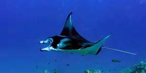

La manta
Il corpo è costituito da un disco piatto di forma romboidale ampio circa il doppio della sua lunghezza, con gli apici laterali appuntiti verso le estremità. Il capo è largo quasi un terzo dell'ampiezza del disco, e presenta all'estremità anteriore una bocca molto ampia, particolare che le differenzia dal genere affine Mobula, con ai lati due peculiari appendici chiamate pinne cefaliche. Gli occhi sono posti subito dietro, ai lati del capo. Sul ventre si aprono bilateralmente le cinque fessure branchiali, ampie e munite di un filtro per trattenere il plancton. Posteriormente al corpo si diparte una sottile appendice caudale che supera di poco in lunghezza il corpo, sormontata alla base da una minuscola pinna dorsale. Non posseggono aculei veleniferi, anche se nel caso di M. birostris, è rilevabile un abbozzo. La pelle presenta piccoli denticoli dermici di forma radiale.
Le uniche due specie appartenenti a questo genere conducono vita essenzialmente pelagica, nutrendosi di plancton. In particolare la specie più grande M. birostris sembra spingersi abitualmente anche in mare aperto, lontano dalle coste, mentre la più piccola M. alfredi è maggiormente stanziale, anche se sono stati osservati spostamenti di una certa importanza. Sono ottimi nuotatori, capaci di compiere anche spettacolari salti fuori dall'acqua, probabilmente nel tentativo di liberarsi di parassiti o remore. Non è raro ritrovarle riunite in piccoli gruppi, e periodicamente anche in grossi assembramenti. La durata della loro vita non è al momento conosciuta, ma dalle comparazioni con altri appartenenti a generi affini, si desume che possa arrivare e probabilmente superare i 25 anni. Sono animali ovovivipari in quanto il piccolo, solitamente uno solo, nasce dopo la schiusa dell'uovo nel corpo della madre.
Date le dimensioni e la scarsa qualità delle carni, le mante fino a tempi recenti erano poco sfruttate per scopi commerciali, e catturate per lo più per errore, finendo casualmente nelle reti usate per altri scopi. Forse proprio per questa scarsa conoscenza, in passato questi animali avevano guadagnato una sinistra fama, in quanto si attribuiva loro abitudini pericolose per l'uomo, tra cui avvolgere col loro mantello i pescatori subacquei per soffocarli. Con l'aumento dei contatti, permessi dall'uso dei moderni apparecchi respiratori, queste leggende si sono rivelate presto del tutto infondate. La richiesta delle loro cartilagini da parte della medicina cinese ha portato ad un incremento nella loro cattura, aumentando il pericolo di una loro diminuzione. In Cina, le branchie di mante e mobule sono molto ricercate come ingredienti per la medicina locale, stimolando una pesca che contribuisce a metterne in pericolo la sopravvivenza. L'allarme per la diminuzione di questa ed altre specie ha portato ad una serie di restrizioni, ponendole sotto il controllo della Convenzione sul commercio internazionale delle specie minacciate di estinzione. Le mante sono animali molto ricercati per gli incontri da subacquei e snorkeler e la presenza di un manta point, zona del reef dove si recano più frequentemente e dove è facile poterle avvicinare, è ampiamente pubblicizzata come attrazione turistica, diventando così una risorsa economica importante. Questo ha convinto molti governi a mettere in atto serie politiche di protezione, vietandone la pesca commerciale. In alcuni acquari dotati di vasche di adeguata capacità, si è riuscito a far ambientare mante di notevoli dimensioni, ottenendo anche alcune eccezionali nascite in cattività.